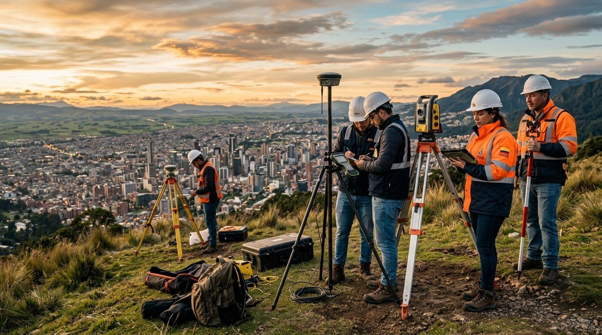
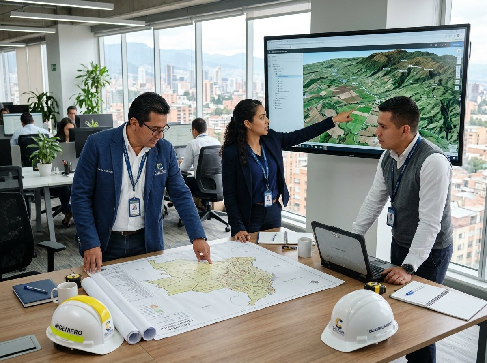
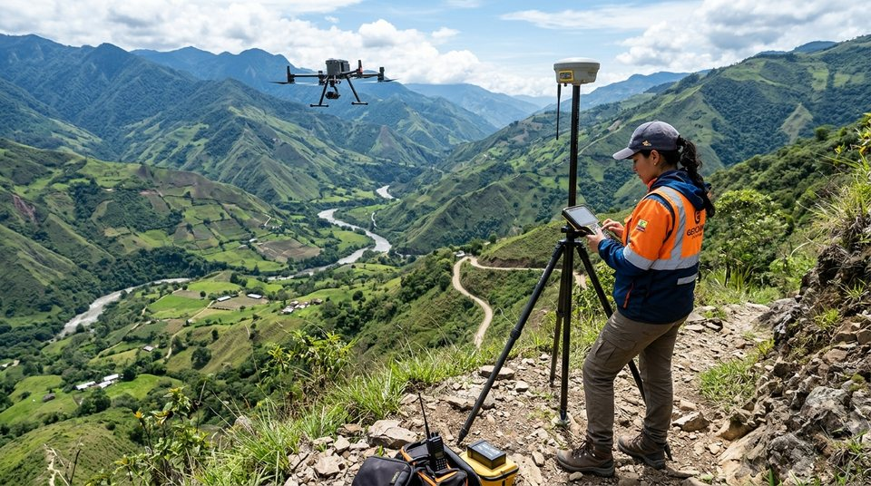
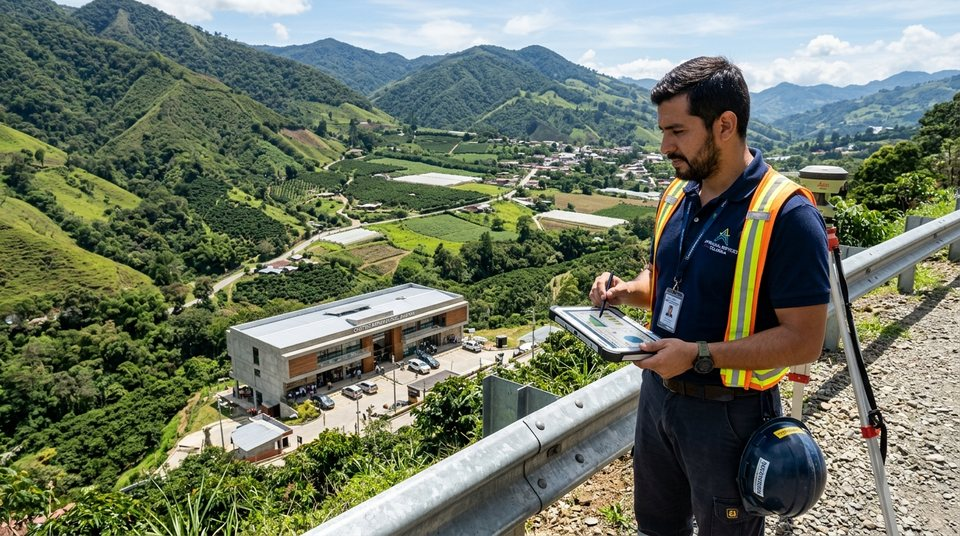
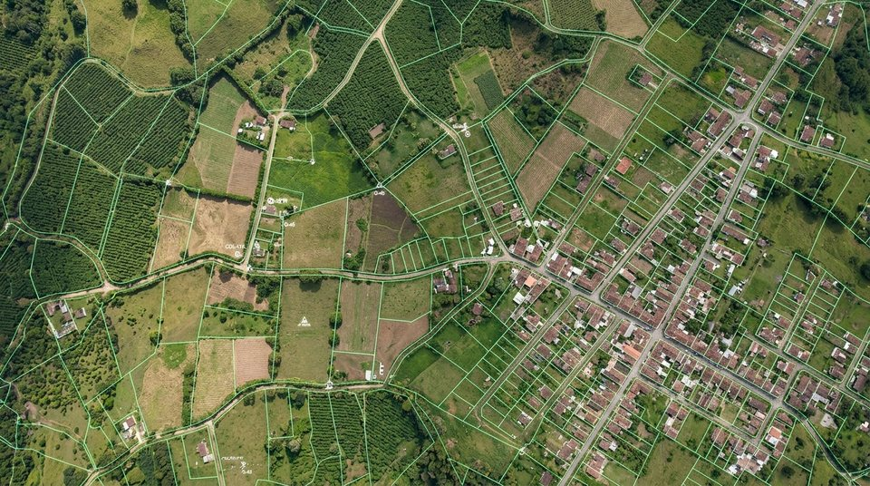

Avalúos Comerciales (IGAC / Res. 941 de 2026)
Dictámenes técnicos de valor comercial para predios urbanos, rurales y activos especiales con rigor metodológico y validez oficial.
Ver alcance en Avalúos →
Respaldamos sus decisiones de inversión, infraestructura y saneamiento de la propiedad mediante avalúos comerciales certificados, levantamientos topográficos de alta precisión y gestión integral del territorio bajo estricto cumplimiento de la normatividad IGAC y SNR.
Dictámenes técnicos de valor comercial para predios urbanos, rurales y activos especiales con rigor metodológico y validez oficial.
Ver alcance en Avalúos →Georreferenciación milimétrica, mapeo aerofotogramétrico con dron (RPAS) y modelamiento cartográfico para proyectos urbanos y rurales.
Ver alcance en Topografía →INGEOPREDIAL S.A.S. es una firma colombiana de ingeniería y consultoría especializada en la administración, valoración y ordenamiento físico-jurídico del territorio. Nuestra organización está liderada por un equipo directivo de tres ingenieros catastrales y geodestas expertos, cuya trayectoria combina el dominio de las ciencias geoespaciales, la valuación inmobiliaria y el derecho registral y catastral.
Entendemos que cada metro cuadrado y cada línea de lindero representan patrimonio, inversión y viabilidad de proyectos. Por ello, integramos instrumentación geodésica de última generación con un análisis riguroso de los títulos de propiedad y las disposiciones vigentes del Instituto Geográfico Agustín Codazzi (IGAC), la Superintendencia de Notariado y Registro (SNR), los Planes de Ordenamiento Territorial (POT) y las Curadurías Urbanas, garantizando seguridad jurídica y técnica en todo el territorio colombiano.
Aplicación estricta de estándares posicionales MAGNA-SIRGAS, tecnología GNSS/RTK y procesamiento fotogramétrico de alta resolución.
Articulación exacta entre la realidad física del terreno, la base catastral y la tradición jurídica en los folios de matrícula inmobiliaria.
Capacidad operativa en Bogotá D.C. y despliegue técnico en zonas urbanas, suburbanas y rurales de cualquier departamento del país.


Ejecutamos estudios, dictámenes y trámites técnicos con trazabilidad documental y precisión certificada, estructurados en cuatro líneas estratégicas de actuación predial:

Normatividad IGAC • Resolución 941 de 2026Elaboración de dictámenes valuatorios objetivos y sustentados estadísticamente para determinar el valor comercial real de bienes inmuebles urbanos, rurales e industriales bajo las metodologías oficiales del IGAC y la Resolución 941 de 2026.
Ejecución de levantamientos topográficos urbanos y rurales amarrados a la red geodésica nacional con receptores GNSS/RTK de doble frecuencia, captura aerofotogramétrica con dron (RPAS), cartografía digital y estructuración en SIG.

Resolución Conjunta 1101 (IGAC - SNR) • SaneamientoGestión integral ante gestores catastrales, notarías y Oficinas de Registro de Instrumentos Públicos para armonizar la realidad física del inmueble con su realidad jurídica bajo la Resolución Conjunta 1101 (IGAC - SNR).
Asesoría técnica y jurídica especializada para la regularización de desarrollos constructivos, revisión de folios de matrícula inmobiliaria, análisis de determinantes del POT y estructuración de expedientes ante Curadurías Urbanas.
Combinamos instrumentación satelital de última generación con rigor jurídico-catastral para entregar dictámenes y levantamientos con validez oficial en toda Colombia.
Posicionamiento en tiempo real amarrado a la red MAGNA-SIRGAS para control geodésico urbano y rural.
Ortofotomosaicos centimétricos, cálculo volumétrico y modelamiento topográfico de grandes extensiones.
Estructuración de bases geográficas y planos protocolizables ante IGAC, gestores catastrales y SNR.
Dictámenes corporativos, comerciales y judiciales con rigor metodológico y estadístico.
Exponga el requerimiento técnico o jurídico de su predio. Nuestros tres ingenieros catastrales y geodestas directores evaluarán su caso de manera personalizada para ofrecerle una ruta de trabajo precisa, transparente y ajustada a la normatividad colombiana vigente.
Sede principal en Bogotá D.C. con capacidad de desplazamiento técnico, operación de campo y gestión catastral a nivel nacional en todos los municipios de Colombia.
Lunes a Viernes: 8:00 a.m. – 6:00 p.m. | Sábados: 8:00 a.m. – 1:00 p.m.